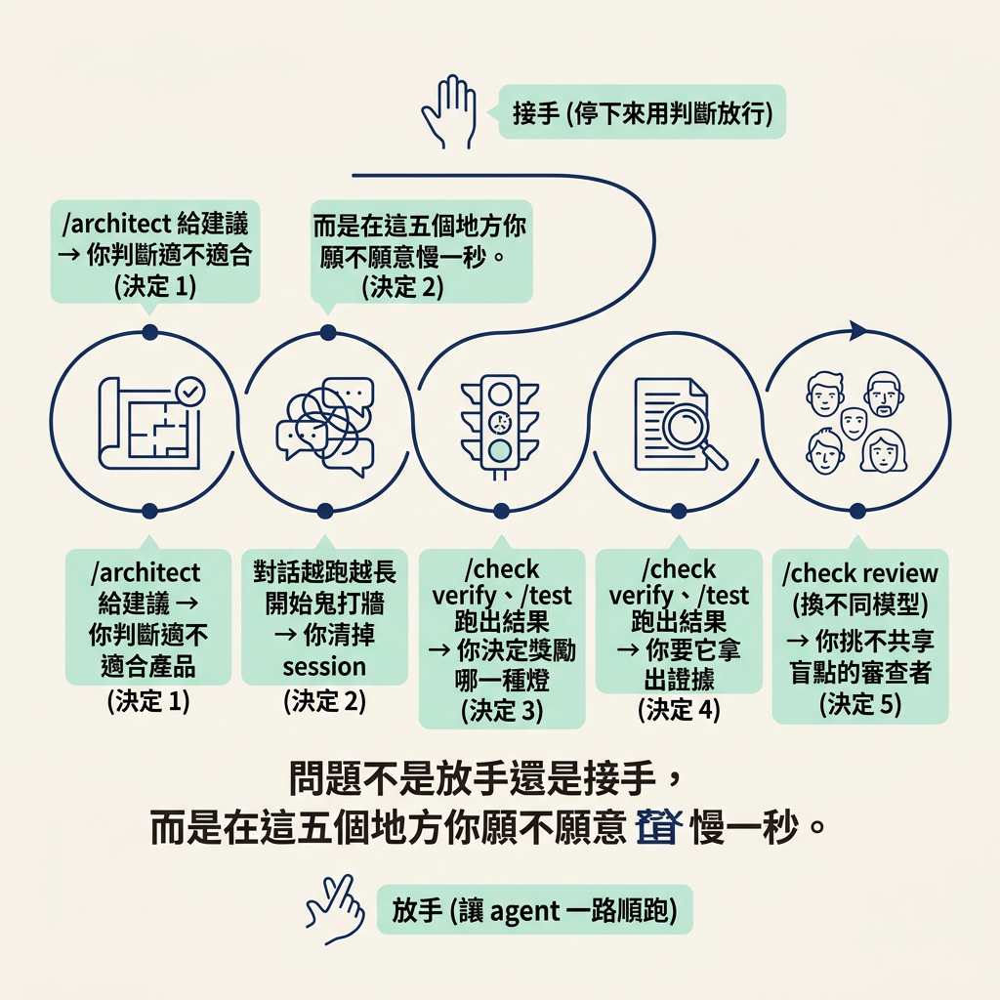
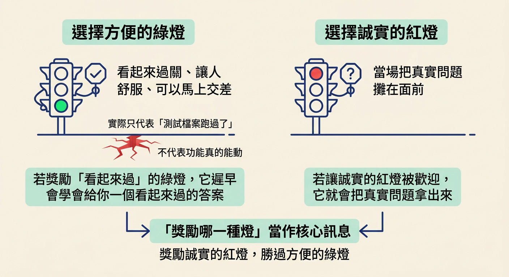
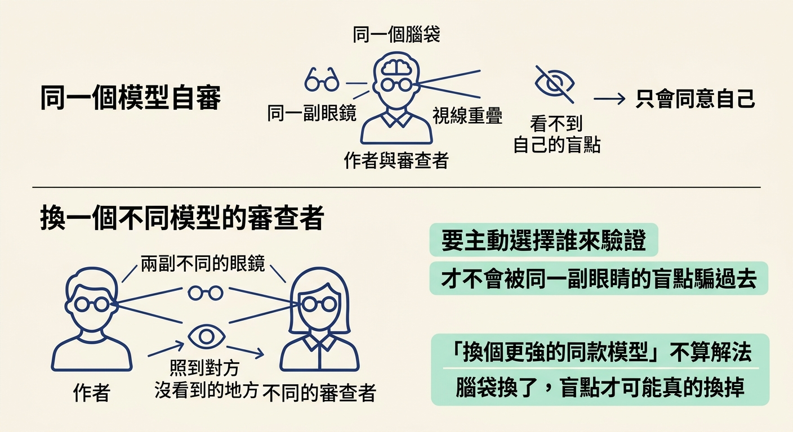
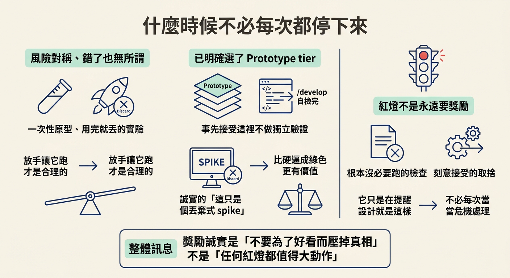

說出五個只有人能做的放行決定，並在每一個上說明為什麼不能交給 agent——(1) 這個建議適不適合我的產品、(2) 對話變泥時清掉 session、(3) 獎勵誠實的紅燈勝過方便的綠燈、(4) 向 agent 要證據、(5) 挑一個不跟作者共享盲點的審查者。
前面兩節，先在紙上畫出一條分工線：skill 帶狀態與流程，人帶判斷。接著檢查了這套 workflow 的「不做清單」，發現它確實刻意把判斷留給你。可是講到這裡，「判斷」還是個有點抽象的詞——它到底出現在哪幾個時刻、長成什麼樣子？
這一節把它收成一句話能用的東西：整個迴圈裡，真正需要你出手放行的，其實只有五個地方。這五個接點有一個共同點——錯了以後，代價不對稱。機器錯了可以重跑，你這五個決定錯了，可能是白做一批功能、帶著一個沒人發現的 bug 上線，或把一份「看起來會過」的假證據當成真的。這種錯，機器賠得起，你賠不起。
這五個接點，每一次的張力都是同一組。左手是放手：讓 agent 一路順跑，快、省事、不打斷節奏。右手是接手：停下來，用自己的判斷放行或不放行。
一直放手，你很快會發現自己不知道在放行什麼；一直接手，你又把 agent 的速度優勢全部抵銷。所以問題不是「放手還是接手」這麼簡單，而是在這五個地方，你願不願意慢一秒。把整個迴圈攤開，這五個接點分別落在這些階段上：
/architect 給建議 → 你判斷適不適合產品（決定 1）
對話越跑越長、開始鬼打牆 → 你清掉 session（決定 2）
/check verify、/test 跑出結果 → 你決定獎勵哪一種燈（決定 3）
→ 你要它拿出證據（決定 4）
/check review（換不同模型） → 你挑不共享盲點的審查者（決定 5）

下面把這五個地方一個一個攤開。
| 放行決定 | 什麼時候出現 | 為什麼 agent 做不到 |
|---|---|---|
| 1. 這個建議適不適合我的產品 | /architect 提出建議、等你拍板時 | 它不知道你的產品情境，也沒有後果可承擔 |
| 2. 對話變泥時清掉 session | 對話又長又亂、開始鬼打牆時 | 它感覺不到自己正在被拖累 |
| 3. 獎勵誠實的紅燈勝過方便的綠燈 | verify 或 test 跑出結果時 | 它沒有理由偏好哪一種燈，你想要哪種它就給哪種 |
| 4. 向 agent 要證據 | 它宣稱「通過了」的時候 | 它說「應該可以」，但不會主動證明給你看 |
| 5. 挑一個不共享盲點的審查者 | 跑 review、需要第二個視角時 | 同一個模型自審，只會同意自己 |
當 /architect 替某個決定做比較時，它會給一個推薦，附上一句簡短的理由和一個備選，讓你覆蓋。它不會丟一份中性清單叫你從頭挑，也不會在背後默默挑一個。
所以判別問句是：「這個推薦的理由，放進我的產品情境還成立嗎？」
假設它推薦某個資料庫，理由是高併發。如果你的產品其實只有幾百個使用者，這個理由對你就沒那麼重要，換一個更好維護的選項反而更對。理由本身沒問題，問題是它不知道你的處境。這個「適不適合」的判斷，只有能承擔後果的人做得了。
講師的用詞很傳神：當對話變成泥（turns to mud），就是該清掉它的時候。對話越長越貴、越長越容易偏，而長到某個程度，它反而更容易忽略你前面說過的事。
判別問句是：「現在的對話，是在幫我推進，還是在拖著我？」
會拖著你的訊號不難認：同一件事講了三遍它還是忘、開始重複、開始前後矛盾。這些都不是「再多聊一下就會好」的狀態，而是「環境壞了、重開一個」的狀態。因為工作狀態存在檔案裡，清掉 session 什麼都不會掉，新對話會從磁碟重新讀懂現況。
有趣的是，agent 自己不會想清掉自己。它感覺不到自己正被一坨又長又亂的脈絡拖累。所以這個決定永遠要你來做。
verify 或 test 跑完，會給你一個結果。紅燈代表「沒過」，綠燈代表「過了」。這一條講的是你獎勵哪一種。
判別問句是：「這個結果是真的跑出來的，還是只是一個方便交差的綠燈？」
這裡有個很容易踩的陷阱：方便的綠燈比誠實的紅燈舒服。誰都想要一次就過。但如果你的流程獎勵「看起來過」，它遲早會學會給你一個看起來過的答案——而那個答案可能只是「測試檔案跑過了」，並不代表功能真的能動。反過來，如果你讓誠實的紅燈是被歡迎的，它就會把真實的問題攤在你面前。

第三條是「你偏好哪種結果」，第四條更進一步：不要接受口頭的「通過」，要它拿出證據。「它說應該可以」不是證據，「它在真的跑起來的 app 上做給你看」才是。
判別問句是：「如果我要它證明，它現在拿得出證據嗎？」
這套流程在這個方向上有一個很值得記的原則：沒有證據，就不算通過。verify 的意義，是在真實運行的 app 上，把 spec 裡承諾過的每一個行為、每一個畫面，一個一個做出來，而不是只確認某個測試檔案是綠的。當它拿不出證據時，最誠實的答案不是硬拗過去，而是回報「卡住了」。
講師把「要證據」和「挑審查者」放在同一句，是因為它們其實是同一件事的兩面：你要主動選擇誰來驗證，才不會被同一副眼睛的盲點騙過去。
判別問句是：「這個審查者，跟寫程式的是不是同一個腦袋？」
答案如果是「是」，那這份 review 的價值就有限。原因是：同一個模型審自己的作品，會傾向同意自己。所以這套流程的 review 會刻意跑在跟寫程式不同的模型上，正是要挑一個不共享盲點的第二個視角。這也是為什麼「換個更強的同款模型」不算解法——腦袋換了，盲點才可能真的換掉。

把這五條當成鐵律，會走向另一個極端——每個小改動都如臨大敵，反而拖垮自己。規則會翻轉，幾種情況下你確實可以放手：
當風險是對稱的、錯了也無所謂的時候。一次性的原型、用完就丟的實驗，你本來就選擇不驗證，硬要它每次都拿出完整證據，只是浪費。這種場合，放手讓它跑是合理的。
當你已經明確選了 Prototype tier 的時候。那代表你事先就接受了「這裡不做獨立驗證」，/develop 自檢完就收工。這時候紅燈的意義也不同：誠實的「這只是個丟棄式 spike」，比硬把它逼成綠色更有價值。
還有一個更細的反例：紅燈不是永遠要獎勵。如果紅燈來自一個根本沒必要跑的檢查，或來自你刻意接受的取捨，那它只是在提醒你「這裡就是這樣設計的」，不需要每次都當成危機處理。獎勵誠實，講的是「不要為了好看而壓掉真相」，不是「任何紅燈都值得大動作」。

這個迴圈真正需要你出手放行的，就是五個地方：(1) 判斷 /architect 的建議適不適合你的產品；(2) 對話變泥時清掉 session；(3) 獎勵誠實的紅燈勝過方便的綠燈；(4) 向 agent 要證據，沒證據就不算通過；(5) 挑一個不跟作者共享盲點、不同模型的審查者。這五個之所以不能交給 agent，共用同一個理由：它對結果沒有任何利害關係，錯了也不痛，所以它既沒有動機也沒有能力替你判斷「對不對、值不值得、能不能放行」。但規則會翻轉——當風險對稱、你已明確選擇不驗證時，放手讓它跑反而才是對的。
檢查表——下一次你卡在「要不要放手」的那一秒，問自己：
走完這三步，你手上就有一套可以自己跑的迴圈：agent 負責快與全，你負責對與值得。這就是「你真正會跑的那個迴圈」。